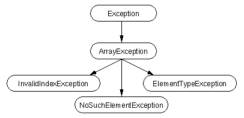

|
|
Handling Errors using Exceptions |
The term exception is shorthand for the phrase "exceptional event" and can be defined as follows:
Definition: An exception is an event that occurs during the execution of a program that disrupts the normal flow of instructions.
Many different kinds of errors can cause exceptions: problems ranging from serious hardware errors, such as a hard disk crash, to simple programming errors, such as trying to access an out-of-bounds array element. When such an error occurs within a Java method, the method creates an exception object and hands it off to the runtime system. The exception object contains information about the exception including its type and the state of the program when the error occurred. The runtime system is then responsible for finding some code to handle the error. In Java terminology, creating an exception object and handing it to the runtime system is called throwing an exception.
After a method throws an exception, the runtime system leaps into action to try and find someone to handle the exception. The set of possible "someones" to handle the exception is the set of methods in the call stack of the method where the error occurred. The runtime system searches backwards through the call stack, beginning with the method in which the error occurred, until it finds a method that contains an appropriate exception handler. An exception handler is considered appropriate if the type of the exception thrown is the same as the type of exception handled by the handler. Thus the exception bubbles up through the call stack until an appropriate handler is found and one of the calling methods handles the exception. The exception handler chosen is said to catch the exception.
Note on terminology: Some languages (or their development environments) use the terms raise and handle the same way that Java uses throw and catch. Java inherits its terminology and much of its exception syntax from C++.
If the runtime system exhaustively searches all of the methods on the call stack without finding an appropriate exception handler the runtime system (and consequently the Java program) terminates.
By using exceptions to manage errors, Java programs have the following advantages over traditional error management techniques:
- Advantage 1: Separate Error Handling Code from "Regular" Code
- Advantage 2: Propagate Errors Up the Call Stack
- Advantage 3: Grouping Error Types and Error Differentiation
Advantage 1: Separate Error Handling Code from "Regular" Code
In traditional programming, error detection, reporting and handling often leads to confusing spaghetti code. For example, suppose that you have a function that reads an entire file into memory. In psuedo-code, your function might look something like this:At first glance this function seems simple enough, but it ignores all of these potential errors:read_file { openTheFile; determine its size; allocate that much memory; read the file into memory; closeTheFile; }To answer these questions within your
- what happens if the file can't be opened?
- what happens if the length of the file can't be determined?
- what happens if enough memory can't be allocated?
- what happens if the read fails?
- what happens if the file can't be closed?
read_filefunction, you'd have to add a lot of code to do error detection, reporting and handling. Your function would end up looking something like this:With error detection built in, your original 7 lines (in bold) have been inflated to 29 lines of code--a bloat factor of almost 400 percent. Worse, there's so much error detection, reporting, and returning, that the original 7 lines of code are lost in the clutter. And worse yet, the logical flow of the code has also been lost in the clutter making it difficult to tell if the code is doing the right thing (is the file really being closed if the function fails to allocate enough memory?) and even more difficult to ensure that the code continues to do the right thing after you modify the function three months after writing it. Many programmers "solve" this problem by simply ignoring it--errors are "reported" when their programs crash.errorCodeType read_file { initialize errorCode = 0; openTheFile; if (theFileIsOpen) { determine the length of the file; if (gotTheFileLength) { allocate that much memory; if (gotEnoughMemory) { read the file into memory; if (readFailed) { errorCode = -1; } } else { errorCode = -2; } } else { errorCode = -3; } closeTheFile; if (theFileDidntClose && errorCode == 0) { errorCode = -4; } else { errorCode = errorCode and -4; } } else { errorCode = -5; } return errorCode; }Java provides an elegant solution to the problem of error management: exceptions. Exceptions enable you to write the main flow of your code and deal with the, well, exceptional cases elsewhere. If your
read_filefunction used exceptions instead of traditional error management techniques, it would look something like this:Notice that exceptions don't spare you the effort of doing the work of detecting, reporting and handling errors. What exceptions do provide for you is the means to separate all the grungy details of what to do when something out-of-the-ordinary happens.read_file { try { openTheFile; determine its size; allocate that much memory; read the file into memory; closeTheFile; } catch (fileOpenFailed) { doSomething; } catch (sizeDeterminationFailed) { doSomething; } catch (memoryAllocationFailed) { doSomething; } catch (readFailed) { doSomething; } catch (fileCloseFailed) { doSomething; } }In addition, the bloat factor for error management code in this program is about 250 percent--compared to 400 percent in the previous example.
Advantage 2: Propagate Errors Up the Call Stack
A second advantage of exceptions is the ability to propagate error reporting up the call stack of methods. Suppose, that theread_filemethod was the fourth method in a series of nested method calls made by your main program:method1calledmethod2which calledmethod3which finally calledread_file.Suppose also, thatmethod1 { call method2; } method2 { call method3; } method3 { call read_file; }method1was the only method interested in the errors that occurred withinread_file. Traditional error notification techniques forcemethod2andmethod3to propagate the error codes returned byread_fileup the call stack until the error codes finally reachedmethod1--the only method that was interested in them.As you learned earlier, the Java runtime system searches backwards through the call stack to find any methods that are interested in handling a particular exception. A Java method can "duck" any exceptions thrown within it, thereby allowing a method further up the call stack to catch it. Thus only the methods that care about errors have to worry about detecting errors.method1 { errorCodeType error; error = call method2; if (error) doErrorProcessing; else proceed; } errorCodeType method2 { errorCodeType error; error = call method3; if (error) return error; else proceed; } errorCodeType method3 { errorCodeType error; error = call readFile; if (error) return error; else proceed; }However, as you can see from the psuedo-code, ducking an exception does require some effort on the part of the "middleman" methods. Any non-runtime exceptions that can be thrown within a method is part of that method's public programming interface and must be declared in themethod1 { try { call method2; } catch (exception) { doErrorProcessing; } } method2 throws exception { call method3; } method3 throws exception { call read_file; }throwsclause of the method. Thus a method informs its callers about the exceptions that it can throw so that the callers can intelligently and conciously decide what to do about those exceptions.Notice again the difference in the bloat factors of these two error management techniques and the code obfuscation factor. The code that uses exceptions is more compact and easier to understand.
Advantage 3: Grouping Error Types and Error Differentiation
Often exceptions fall into categories or groups. For example, you could imagine a group of exceptions each of which represented a specific type of error that can occur when manipulating an array: the index was out of range for the size of the array, the element being inserted into the array was of the wrong type, or the element being searched for was not in the array. Furthermore, you can imagine that some methods would like to handle all exceptions that fall within a category (all array exceptions), and other methods would like to handle specific exceptions (just the invalid index exceptions, please).Because all exceptions that are thrown within a Java program are first-class objects, grouping or categorization of exceptions is a natural outcome of classes and superclasses. Java exceptions must be Throwable, that is, they must be instances of Throwable or any Throwable subclass. Like other Java classes, you can create subclasses of the Throwable class and subclasses of your subclasses. Each "leaf" class (a class with no subclasses) represents a specific type of exception and each "node" class (a class with one or more subclasses) represents a group of related exceptions.
For example, in the following diagram, ArrayException is a subclass of Exception (a subclass of Throwable) and has three subclasses.

InvalidIndexException, ElementTypeException and NoSuchElementException are all leaf classes and each one represents a very specific type of error that can occur when manipulating an array. A method can catch an exception based on its specific type (its immediate class or interface). For example, if your wanted to write an exception handler that handled only invalid index exceptions, your
catchstatement would look like this:ArrayException is a node class and represents any error that can occur when manipulating an array object including those specifically represented by one of it subclasses. A method can catch an exception based on its group or general type by specifying any one of the exception's superclasses in thecatch (InvalidIndexException e) { . . . }catchstatement. For example, if a method wanted to catch all array exceptions regardless of their specific type, that method would set up an exception handler whose argument was ArrayException:This handler would catch all array exceptions including InvalidIndexException, ElementTypeException and NoSuchElementException. You could even set up an exception handler that handled any Exception with this handlercatch (ArrayException e) { . . . }but it is not recommended.catch (Exception e) { . . . }So you can create groups of exceptions and handle exceptions in a general fashion, or you can use the specific exception type to differentiate exceptions and handle exceptions in an exact fashion.
What's Next?
Now that you understand what exceptions are and the advantages of using exceptions in your Java programs, it's time to learn how.
|
|
Handling Errors using Exceptions |